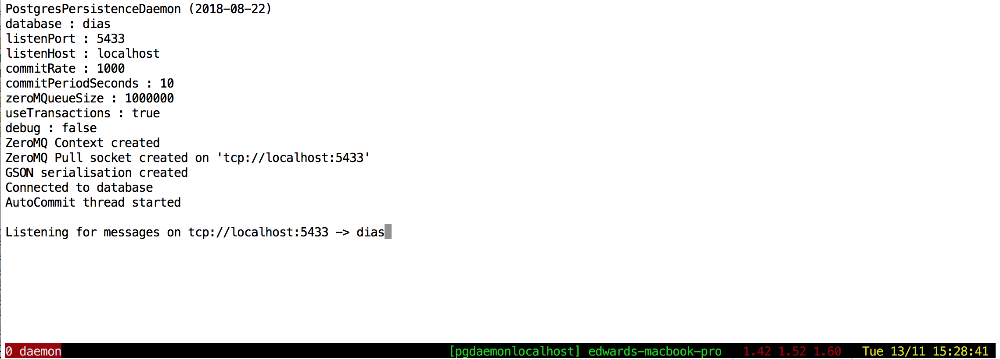

DIAS Logging System¶
For instructions on how to download and install the DIAS Logging System, see Download section.
Introduction¶
The purpose of the DIAS-Logging-System is to provide appropriate logging to support the debugging and real-time monitoring of peer-to-peer applications such as DIAS. It can be used for all applications based on Protopeer.
For a quick start, jump directly to the section “Using DIAS-Logging-System in your application”, below.
Initially, logging within DIAS was performed using log4j, a classic logging tool widely used by Java developers that works well on simple applications but has major shortcomings in peer-to-peer applications. Already with 30 peers in a network, basic text-based log4j logfiles become difficult to handle, for the following reasons:
Multiplicity of log files. Since there is one logfile per peer, it is inconvenient to browse through N different logfiles
Requirement to write a multitude of Python and/or other scripts for post-processing logfiles
Difficulty to perform complex event processing to correlate data points generated within peers and amongst peers, throughout the network
Query times get long, especially as the size grow large when simulations run over several weeks
It is not guaranteed to have a decent network file system (such as NFS) that can support heavy writing. Such was the case on the ETH Euler supercomputer
Architecture¶
Thus we designed the DIAS-Logging-System around a single PostgreSQL database with the following four objectives:
Simplified analysis
Leverage the powerful SQL language, rather than ad-hoc scripts such as Python and sql to post-process logfiles
Using SQL, it becomes easy to understand interactions within components the components (peerlets) of a peer as well as between peers, using built-in SQL JOIN operations. This also paves the way for complex event processing, where different types in different parts of the system can be easily brought together for correlation analysis
Enable time-series analysis, e.g to observe the evolution of aggregates or memory usage over time
Support for multiple peers on multiple hosts
With peers located on different servers, possibly on different networks across the Internet, the logging data should be stored in a single database, accessible from all peers
Even when peers are on the same private network with a common shared file stotrage, NFS may not provide the necessary throughput to sustain heavy logging from many peers
Lightweight, simple to use and efficient
Minimise impact on real-time applications
Global static function calls allow logging from anywhere within your code without need to pass references around the classes
Simple drop-copy replacement for System.out.print statements to minimise refactoring time towards the DIAS-Logging-System
Scaling and real-time
The DIAS-Logging-System can scale to hundreds of peers running over periods of weeks and months
The DIAS-GDELT experiment has been successfully running for 6 months on the DIAS-Logging-System without a single failure
Fast access to the logs, using database tuning techniques such as partitioning and indexing
The ability to perform analysis on the logging in real-time, and to allow for dashboards (Tableau, Qlik, etc)
Fast write speeds several K msgs /sec
Components¶
With these objectives in mind, DIAS-Logging-System was designed using the following code components.
A single PostgreSQL database, containing all the logging data from all peers
Using database tuning techniques such as partitioning and indexing
A single persistence demaon, accessible by all peers in the network, that listens to ZeroMQ messages with logging information sent by the peers
simple Single location for the data -> single connection to database, commit rate
The daemon listens to logging information on a pull port, and persists all received messages to the PostgreSQL database
Fast write speeds supporting several thousand msgs /sec sustained over time
The users only needs to implement simple logging functions, with the same behavior as basic printing functions such ZeroMQ messaging
RawLog
EventLog
MemLog
Figure: Design of the DIAS-Logging-System
Code examples¶
Currently there are three supported mechanisms for logging data:
Rawlog, free-form text logging, used as a replacement to System.out.print
Memlog, used to sample memory footprint of Java objects at regular intervals
Performs deep traversal of objects in order to obtain total memory size of collections as well as the contained objects, recursively
Eventlog, used to understand event sequences within peers and/or amongst sets of peers
This is basically a more structured form of logging, which works well with scripts such as SQL or Python for more complex analyses
Code examples: RawLog¶
RawLog is designed as a drop-copy replacement for System.out.printf
The function takes 2 arguments
The log level, a number between 1 and 3 representing respectively an information, a warning or an error message
Any string to be persisted
System.out.printf( "DIASlight created\n" );
RawLog.print(1,"DIASLight::SendBootstrapHello");
Code snippet: Java code to add a free-form logging message to the DIAS-Logging-System. The number ‘1’ indicates level info
Code examples: EventLog¶
EventLog is designed to understand code execution sequence within a peer and across multiple peers
It is different than RawLog in that it is structured, allowing for side-by-side comparison of events within and across peers
Furthermore, the EventLog automatically records the id of the calling thread allowing insights into potential issues regarding thread synchronisation
The function takes 4 arguments
The name of the calling class, e.g. DIAS
The name of the calling function, e.g. start
A key, e.g. “alreadyStarted”
A value (text), e.g. “True”
The EventLog automatically records the id of the calling thread allowing insights into potential issues regarding thread synchronisation
EventLog.logEvent("DIAS", "start", "alreadyStarted", Boolean.toString(alreadyStarted) );
Code examples: MemLog¶
MemLog is designed to periodically measure total memory footprint of any Java object in memory
It’s great for detecting memory leaks that appear over time, e.g over several weeks of operation
As explained below, MemLog uses the JAMM instrumentation agent, that traverses all elements and member variables of complex Java objects such as classes and containers
Objects where memory monitoring is required need to be added with a call to add_object, that takes 3 arguments
Arguments one and two are simple tags that will allow you
In the example below, we are using the class in which the object belongs and the name of the instantiated object
The third argument is a reference to the Java object to be monitored
One an object has been added, as per the example below, a sample of the total memory footprint of the object will be taken every 60 seconds and persisted to the memlog table
// memory logging
MemLog.add_object("DIASlight", "dumper", this.dumper);
Code snippet: Java code to add an object the MemLog. In this example, the instance of a protopeer.MeasurementFileDumper inside the DIASlight peerlet.
Querying the data¶
Since the data is stored in a PostgreSQL database with fully compliant SQL support, it is straightforward to examine the logs as well as perform complex search, join and analytics.
RawLog: Most recent messages
Shows the 100 most recent RawLog messages, across all peers
A powerful feature of the DIAS-Logging-System is the ability to observe log events across peers within a same window, as can be seen in the example below.
SELECT * FROM rawlog ORDER BY seq_id DESC LIMIT 100;

Figure: Latest 100 RawLog messages, across all peers
RawLog: Only messages of a given peer, that contain certain text
SELECT * FROM rawlog WHERE peer = 13 AND txt LIKE 'LEAVE REQUEST IS TRUE!' ORDER BY seq_id DESC ;

Figure: Searching for messages within a given peer that contain specific text
RawLog: Warning and error messages
The rawlog table is partitionned by error_level for fast lookup
SELECT * FROM rawlog WHERE error_level >= 2 ORDER BY seq_id DESC LIMIT 100;

Figure: Warning and error messages
EventLog: Summary of events logged
SELECT classname,func,key,COUNT(*) FROM eventlog GROUP BY classname,func,key ORDER BY classname,func,key ASC;
Figure: Summary of the types of events stored in the event log
EventLog: Most recent events
The events in the eventlog table are persisted with milli-second resolution timestamp, which should provide enough resolution for most debugging applications
In the below example you can observe the DIAS aggregation process taking place amongst the different peers in the network
SELECT * FROM eventlog ORDER BY current_time_millis DESC LIMIT 200;
Figure: Most recent events in the event log
EventLog: Tracking certain events
In the below example, we observe the finger event. When each peer is started, it writes it’s IP address and port to the EventLog
This allows for simple retrieval of the fingers of each peer
SELECT * FROM eventlog WHERE key = 'finger' ORDER BY epoch ASC LIMIT 200;
Figure: Filtering on the event type (column ‘key’)
MemLog: Show the latest memory footprint for recorded objects for each peer
WITH with_last_peer_seq_id AS
(
SELECT
MAX(seq_id) AS last_peer_seq_id
,peer
,object_group_name
,object_name
FROM
memlog
GROUP BY
peer
,object_group_name
,object_name
)
/* SELECT * FROM with_last_peer_seq_id ORDER BY peer ASC; */
SELECT
mem.*
FROM
memlog mem
INNER JOIN
with_last_peer_seq_id last_records
ON
last_records.last_peer_seq_id = mem.seq_id
--WHERE
-- mem.object_size_mb > 0.1
ORDER BY
peer ASC
,object_size_mb DESC NULLS LAST
Show the memory footprint of all recorded objects for a single peer, as a timeseries
SELECT
*
FROM
memlog
WHERE
peer = 1
ORDER BY seq_id ASC;
Using DIAS-Logging-System in your application¶
Before the DIAS-Logging-System can be used, it needs to be initalised inside each Java program
Import Persistence Client
The Persistence Client is required by the RawLog, MemLog and EventLog classes to send messages to be persisted to the Persistence Daemon
The advantage of this design is that the Persistence Client and Persistence Daemon could be modified to store the data in other types of databases, without affecting the RawLog, MemLog or EventLog classes
import pgpersist.PersistenceClient;
/* ... */
persistenceClient = new PersistenceClient( zmqContext, daemonConnectString, persistenceClientOutputQueueSize );
System.out.println( "persistenceClient created" );
Code Snippet: Java code to initialise the PersistenceClient instance
RawLog
The RawLog class is initialised with the persistence client that actually sends the messages to the Persistence Daemon
Next, you can set the threshold level for logging. Default would be 2 and above, i.e only persist warnings and errors
Set this value to 1 to log all calls to RawLog
Optionally, you specify the the peer in which your code is running
This allows RawLog to automatically add additional information to the logging, such as:
Peer ID
Epoch
Optionally, you specify the the DIAS Network Id, which appears as a column in the rawlog table and allows distinguishing between different DIAS networks running on the same infrastructure
RawLog.setPeristenceClient(persistenceClient);
RawLog.setErrorLevelThreshold(rawLogLevel); // log all (1); only log warnings (2); errors (3)
RawLog.setPeer(newPeer);
RawLog.setDIASNetworkId(diasNetworkId);
System.out.printf( "RawLog setup with rawLogLevel %d\n", rawLogLevel );
Code Snippet: Java code to initialise the RawLog class
EventLog
The EventLog class is initialised similarly to the RawLog with a:
Persistence client that actually sends the messages to the Persistence Daemon
Optionally, you specify the the peer in which your code is running
Optionally, you specify the the DIAS Network Id, which appears as a column in the eventlog table and allows distinguishing between different DIAS networks running on the same infrastructure
EventLog.setPeristenceClient(persistenceClient);
EventLog.setPeer(newPeer);
EventLog.setDIASNetworkId(diasNetworkId);
Code Snippet: Java code to initialise the EventLog class
MemLog
The MemLog class is initialised similarly to the RawLog and EventLog classes above, with some notable differences
First, a Java instrumentation class, that will take the actual memory measurements, is required for the MemLog and must be passed as an argument to Memlog. More information about Java instrumentation can be found at Oracle (see references below)
The particular instrumentation class used is JAMM (see references below). JAMM is a powerful Java instrumentation class that mesures the size of objects in memory. For containers, JAMM actually traverses the containers and measures the size of each element, further traversing each element if it is a container. This recursive approach allows proper estimation of the memory footprint of an object.
Second, the period for taking snapshots
Memlog will periodically compute the memory footprint of each object that was added with add_object(), at the period specificed in startTimer()
// initialise MemLog
final MemoryMeter instrument = new MemoryMeter();
if( !MemoryMeter.hasInstrumentation() )
System.out.printf( "MemLog: No instrumentation\n" );
else
{
MemLog.setPersistenceClient(persistenceClient);
MemLog.setMeasurementInstrument(instrument);
MemLog.setPeer(newPeer);
MemLog.setDIASNetworkId(diasNetworkId);
MemLog.startTimer(60);
System.out.printf( "MemLog setup\n" );
MemLog.add_object("Peer", "Peer", newPeer);
}
Code Snippet: Java code to initialise the MemLog class
Database Installation¶
The output of the DIAS-GDELT system is stored in a PostgreSQL database, that must be setup in order for DIAS-GDELT to function correctly.
Installation of the database, that contains the output of the logging, is simple and is done in three steps. The DIAS-Logging-System requries a running PostgreSQL database, that we will install in the first step just below.
Install postgres database
Note that this will also start the database service
# on an Ubuntu system (Ubuntu 14 or higher)
sudo apt-get update
sudo apt-get install postgresql
Code Snippet: Ubuntu commands to install the latest version of PostgreSQL server
Create a database
Login into PostgreSQL, using your favorite SQL editor or psql
Choose any name, in this case we choose the name dias
If you change the database name, you will also need to update the file conf/daemon.conf accordingly
CREATE DATABASE dias;
Code Snippet: SQL commands to create the persistence database
Create tables
Finally, create the tables that will store the logging information
There are three tables to create:
eventlog.sql
memlog.sql
rawlog.sql
The source SQL can be found here:
DIAS-Logging-System/sql/definitions
DIAS-Development/sql/definitions
Basic database optimisations such as table partitioning and indexing are provided out of the box
-- copy + paste the SQL in the above mentionned files to create the tables
CREATE TABLE eventlog ...
CREATE TABLE memlog ...
CREATE TABLE rawlog ...
Code Snippet: SQL commands to create the persistence tables
Launch¶
Once the DIAS-Logging-System is installed, launch the persistence daemon (that listens for messages to be logged and writes them to the database).
cd DIAS-Logging-System
./start.daemon.sh deployments/localhost
Code Snippet: Commands to launch of the persistence daemon
This will launch a UNIX screen session, inside of which the persistence daemon will run. In the screenshot below zou can see here that the daemon is listening on localhost:5433 for logging messages to be persisted
Figure: Screenshot of the running DIAS-Logging-System persistence daemon
References¶
Java Instrumentation: https://docs.oracle.com/javase/8/docs/api/index.html?java/lang/instrument/Instrumentation.html
JAMM Memory Instrumentation: https://github.com/jbellis/jamm